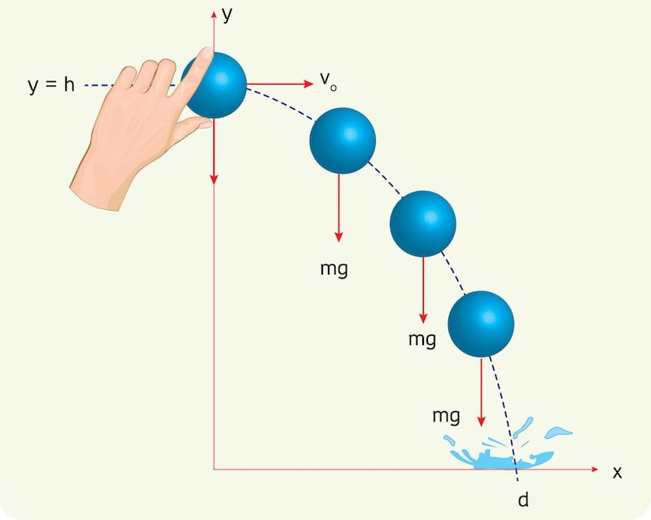
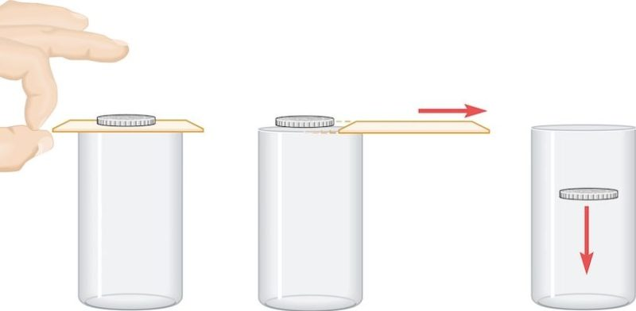

Vectores
¿Qué es un vector?
|
En física y matemáticas, un vector es un segmento de una línea recta, dotado de un sentido, es decir, orientado dentro de un plano euclidiano bidimensional o tridimensional. O lo que es lo mismo: un vector es un elemento en un espacio vectorial. Los vectores permiten representar magnitudes físicas dotadas no sólo de intensidad, sino de dirección, como es el caso de la fuerza, la velocidad o el desplazamiento. Ese rasgo de contar con dirección es el que distingue a las magnitudes vectoriales de las escalares. Además, un vector puede representarse en un plano cartesiano mediante un conjunto de coordenadas (x,y), o en uno tridimensional (x,y,z). Los vectores se representan típicamente mediante una flecha dibujada por encima del símbolo empleado. |
Características
|
Los vectores, representados gráficamente, poseen las siguientes características:
|
Sentido de un vector
|
El sentido de los vectores se representa gráficamente mediante una punta de flecha apuntando en alguna dirección. Esto representa hacia qué lado de la línea de acción (dirección) se dirige el vector, o sea, hacia dónde apunta. El sentido es sumamente importante a la hora de expresar magnitudes vectoriales, ya que puede determinar el tipo de operación o cálculo que es posible realizar con las mismas. |
Ejemplos de un vector
|  |  |
Tipos de vectores
|
Hay dos formas con las que podemos medir una vector y son las siguientes:
Cuando se nos dé un problema donde tengamos que usar vectores, nuestro objetivo será hallar el vector resultante que es aquel que resulta despues de la aplicación de todos los vectores, ya sea sumando todos los componentes X y Y o graficandolos en un plano cartesiano. |
Método por Componentes
|
Como su nombre lo dice, este método utiliza solamente los componentes de X y Y de los vectores; así que, si vamos
a usar este método hay que asegurarnos de que todos nuestros vectores estén con medidas escalar, como consecuencia,
tendremos que convertir los vectores polares a escalares mediante funciones trigonometricas.
Al tener todos nuestros vectores en escalara, tendremos que sumar todos los componentes en X y lo mismo para las Y
para obtener nuestro vector resultante en escalar. |
Método por Polígono de Fuerzas
|
En este méto necesitaremos un transportador y una regla porque se necesitará graficar y trazar cada vector conforme su dirección
y magnitud.
El procedimiento es el siguente: primero tendremos que tener todos nuestros vectores en polar, con ángulo y una magnitud, luego
pondremos el eje central de nuestro transportador en las cordenadas X:0, Y:0 de nuestro plano cartesiano y trazar nuestro primer vector.
Cabe recalcar que tendremos que trazar los vectores en orden.
Siguiendo esa instruccion, trazaremos nuestro siguiente vector en la punta del anterior, pero con nuestro transportador seguirá en la
misma posición como si al final del primer vector se formara un segundo plano cartesiano donde haremos el siguiente vector.
Repetiremos ese mismo procedimiento con todos nuestros vectores y hasta el último, mediremos desde la punta de nuestro último vector
hasta el punto X:0, y:0 del plano cartesiano, obtenemos la distancia y el ángulo y ese será nuestro vector resultante. X = Cosθ * |A| Y = Sinθ * |A| |